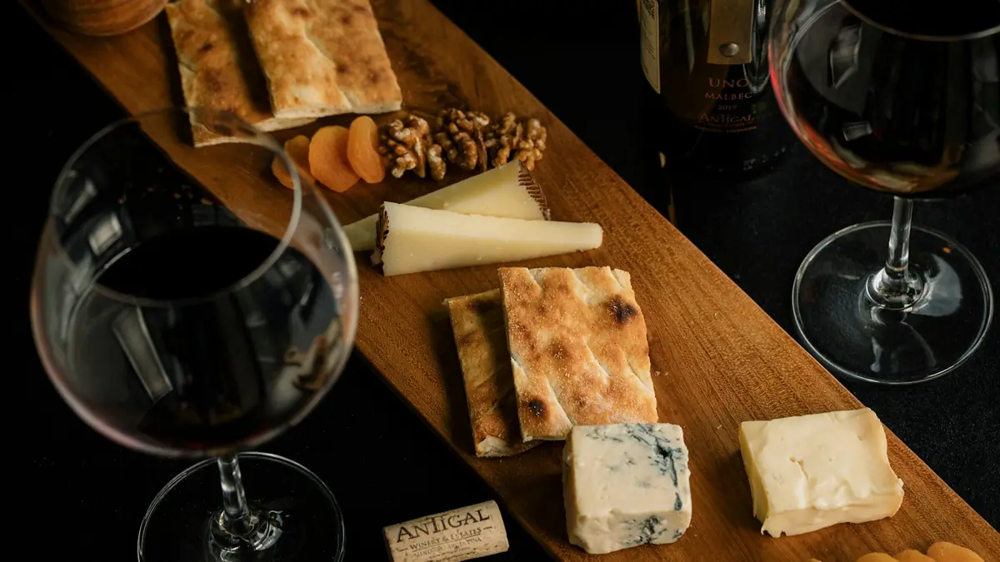

Home › Wine stories › Port and Stilton: Why Britain Pairs Them at Christmas
Port and Stilton: Why Britain Pairs Them at Christmas

Photo: Alessio Roversi on Unsplash
A sweet fortified wine from Portugal and a blue cheese from the English Midlands became the classic British Christmas finale. Here is how trade wars, coaching inns and the calendar brought them together.
Ask a British family what comes after the Christmas pudding and many will tell you: a wedge of Stilton and a glass of port. It feels like a pairing as old as the hills, yet both halves of it are products of the eighteenth century, and they met thanks to politics, roads and the farming year rather than any grand plan.
Start with the wine. England's long quarrels with France made claret hard to come by in the late 1600s, and in 1667 Charles II retaliated against French trade restrictions by banning French wine imports. Merchants looked to their old ally Portugal instead. A much-repeated story, best treated as legend, tells of two young men sent by a Liverpool merchant in 1678 who tasted a sweet, smooth wine at a monastery near Lamego and shipped the lot home. What is certain is that the Methuen Treaty of 1703 set lower English duties on Portuguese wine than on French, and by around 1710 English shippers had their lodges in Vila Nova de Gaia, across the river from Porto.
Those early wines were stabilised with a dash of brandy for the voyage. Only in the later 1700s did producers start adding spirit during fermentation, stopping the yeast while plenty of grape sugar remained, and the method was not universal until about 1850. That is the rich, sweet, strong style we now call port, and in 1756 the Marquis of Pombal fenced off the Douro with stone markers, creating one of the world's first official wine regions.
Now the cheese. In 1724 Daniel Defoe described the village of Stilton, on the Great North Road, as a place famous for cheese. Tradition credits Cooper Thornhill, landlord of the Bell Inn from 1730 to 1759, with selling a creamy blue cheese made in Leicestershire to hungry coach travellers, who spread its fame up and down the country. Ironically, under its Protected Designation of Origin, granted in 1996, Stilton may only be made in Derbyshire, Leicestershire and Nottinghamshire, not in Stilton itself.
Why Christmas? The best answer is the calendar. Cheese was made when milk was plentiful in late spring and early summer, and Isabella Beeton's Book of Household Management of 1861 noted that Stilton made in May or June was usually the one served at Christmas, after months of ripening. Victorian businesses even sent whole wheels as festive gifts. Port, meanwhile, was already the warming after-dinner wine of the well-stocked British sideboard.
The match works on the palate too. Stilton is salty, creamy and pungent; port is sweet, fruity and around 20 per cent alcohol. Salt makes the sweetness taste rounder, the fat softens the spirit, and the wine's fruit lifts the cheese. One old habit to avoid: scooping out the middle of a whole Stilton and pouring port into it. The Stilton Cheesemakers' Association says the cheese should never be drenched, and scooping simply dries it out.
So this festive season, cut your Stilton in neat wedges and pour something with real depth. A Vintage or Late Bottled Vintage port brings the dark-fruit power for a mature blue, while a 10 or 20 Year Old Tawny, nutty and served lightly chilled, is gorgeous with a creamier, younger cheese. Pass it to the left, of course.
Sources
- Stilton cheese – Wikipedia
- History of Stilton – Stilton Cheesemakers' Association
- Why do we eat blue cheese at Christmas? – Neal's Yard Dairy
- History of the Douro Valley – Fonseca Port
- Port wine – Wikipedia
- A Tale of Two Christmases – Taylor's Port
The Wine Reference newsletter
New wines, stories and career guides, one email a week at most.
Over 18s only. Unsubscribe any time with one click. Your email is stored securely by Kit and never shared.
Support The Wine Reference
This guide is free, with no paywall. If it helped you choose a bottle, you can buy me a glass and keep it growing.
🍷 Buy me a glass